llrf package¶
Submodules¶
llrf.rf_noise module¶
Methods to generate RF phase noise from noise spectrum and feedback noise amplitude as a function of bunch length
| Authors: | Helga Timko |
|---|
RF phase noise generation¶
- class llrf.rf_noise.PhaseNoise(object).__init__(frequency_array, real_part_of_spectrum, seed1=None, seed2=None)¶
Contains the spectrum of RF phase noise and the actual phase noise randomly generated from it. Generation done via mixing with white noise.
Parameters: - frequency_array (numpy.array) – input frequency range
- real_part_of_spectrum (numpy.array) – input spectrum, real part only, same length as frequency_array
- seed1 (int) – seed for random number generator
- seed2 (int) – seed for random number generator
Warning
The spectrum has to be input as double-sided spectrum, in units of [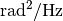].
Both hermitian to real and complex to complex FFTs are available. Use seeds to fix a certain random number sequence; with seed=None a random sequence will be initialized.
- spectrum_to_phase_noise(transform=None)¶
Transforms a noise spectrum to phase noise data.
Parameters: transform (choice) – FFT transform kind Returns: time and phase noise arrays Note
Use transform=None or 'r' to transform hermitian spectrum to real phase. In this case, input only the positive part of the double-sided spectrum. Use transform='c' to transform complex spectrum to complex phase. In this case, input first the zero and positive frequency components, then the decreasingly negative frequency components of the double-sided spectrum. Returns only the real part of the phase noise. E.g. the following two ways of usage are equivalent:

The transformation in steps
Step 1: Set the resolution in time domain. To transform a hermitian spectrum to real phase noise,
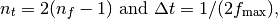
and to transform a complex spectrum to complex phase noise,
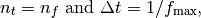
where fmax is the maximum frequency in the input in both cases.
Step 2: Generate white (carrier) noise in time domain
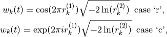
Step 3: Transform the generated white noise to frequency domain
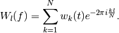
Step 4: In frequency domain, colour the white noise with the desired noise probability density (unit: radians). The noise probability density derived from the double-sided spectrum is
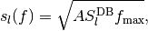
where 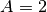 for transform = 'r' and 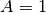 for transform = 'c'. The coloured noise is obtained by multiplication in frequency domain
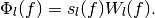
Step 5: Transform back the coloured spectrum to time domain to obtain the final phase shift array (we use only the real part).
LHC-type phase noise generation¶
- class llrf.rf_noise.LHCFlatSpectrum(object).__init__(GeneralParameters, RFSectionParameters, time_points, corr_time = 10000, fmin = 0.8571, fmax = 1.1, initial_amplitude = 1.e-6, seed1 = 1234, seed2 = 7564)¶
Generates LHC-type phase noise from a band-limited spectrum. Input frequency band using fmin and fmax w.r.t. the synchrotron frequency. Input double-sided spectrum amplitude [] using initial_amplitude. Fix seeds to obtain reproducible phase noise. Select time_points suitably to resolve the spectrum in frequency domain. After corr_time turns, the seed is changed (reproducibly) to cut numerical correlated sequences of the random number generator.
Parameters: - GeneralParameters – input_parameters.general_parameters.GeneralParameters
- RFSectionParameters – input_parameters.rf_parameters.RFSectionParameters
- time_points (int) – number of phase noise points of a sample in time domain
- corr_time (int) – number of turns after which seed is changed
- fmin (double) – spectrum lower limit in units of synchrotron frequency
- fmax (double) – spectrum upper limit in units of synchrotron frequency
- initial_amplitude (double) – initial double sided spectral density []
- seed1 (int) – seed for random number generator
- seed2 (int) – seed for random number generator
Warning
time_points should be chosen large enough to resolve the desired frequency step 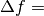 GeneralParameters.f_rev/LHCFlatSpectrum.time_points in frequency domain.
- generate()¶
Generates LHC-type phase noise array (length: GeneralParameters.n_turns + 1). Stored in the variable LHCFlatSpectrum.dphi.
Bunch-length based feedback on noise amplitude¶
- class llrf.rf_noise.LHCNoiseFB(object).__init__(bl_target, gain = 1.5, factor = 0.8)¶
Feedback on phase noise amplitude for LHC controlled longitudinal emittance blow-up using noise injection through cavity controller or phase loop. The feedback compares the FWHM bunch length of the bunch to a target value and scales the phase noise to keep the targeted value.
Parameters: - bl_target – Targeted 4-sigma-equivalent FWHM bunch length [ns]
- gain – feedback gain [1/ns]
- factor – feedback recursion scaling factor [1]
Warning
Note that the FWMH bunch length is scaled by
 in order to obtain a 4-sigma equivalent value.
in order to obtain a 4-sigma equivalent value.- FB(RFSectionParameters, Beam, PhaseNoise, Slices, CC = False)¶
Calculates the bunch-length based feedback scaling factor as a function of measured FWHM bunch length. For phase noise injected through the cavity RF voltage, the feedback scaling can be directly applied on the RFSectionParameters.phi_noise variable by setting CC = True. For phase noise injected through the PhaseLoop class, the correction can be applied inside the phase loop, via passing LHCNoiseFB as an argument in PhaseLoop.
Parameters: - RFSectionParameters – input_parameters.rf_parameters.RFSectionParameters
- Beam – beams.beams.Beam
- PhaseNoise – phase-noise type class, llrf.rf_noise.PhaseNoise or llrf.rf_noise.LHCFlatSpectrum
- Slices – beams.slices.Slices
- CC (bool) – cavity controller option
- classmethod fwhm(Slices)¶
Fast FWHM bunch length calculation with slice width precision.
Parameters: Slices – beams.slices.Slices Returns: 4-sigma-equivalent FWHM bunch length [ns]
llrf.phase_loop module¶
Various beam phase loops (PL) with optional synchronisation (SL), frequency (FL), or radial loops (RL) for the CERN machines
| Authors: | Helga Timko |
|---|
Machine-dependent Beam Phase Loop¶
- class llrf.phase_loop.PhaseLoop(object).__init__(GeneralParameters, RFSectionParameters, Slices, gain, gain2 = 0, machine = 'LHC', period = None, window_coefficient = 0, coefficients = None, PhaseNoise = None, LHCNoiseFB = None)¶
One-turn PL for different machines with different hardware. The beam phase is calculated as the convolution of the beam profile with the RF wave of the main harmonic system (corresponding to a band-pass filter). The PL acts directly on the RF frequency and phase of all harmonics.
Some machine-dependent features:
- PSB: use sampling_frequency for a PL that is active only at certain turns.
- SPS: use window coefficient to sample beam phase over a suitable amount of bunches (window_coefficient = 0 results in single-bunch acquisition as in the LHC)
- LHC_F: PL with optional FL (use gain2 to activate)
- LHC: PL with optional SL (use gain2 to activate; note that gain is frequency dependent)
Parameters: - GeneralParameters – input_parameters.general_parameters.GeneralParameters
- RFSectionParameters – input_parameters.rf_parameters.RFSectionParameters
- Slices – beams.slices.Slices
- gain (double) – phase loop gain [1/ns], typically 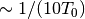
- gain2 (double) – FL gain [turns] or SL gain [1/ns], depending on machine; typically ~10 times weaker than PL
- machine (str) – machine name, determines PL choice
- period (double) – optional for PSB: period of PL being active
- window_coefficient (double) – window coefficient for band-pass filter determining beam phase; use 0 for single-bunch acquisition
- coefficients (array) – optional for PSB: PL transfer function coefficients
- PhaseNoise – optional: phase-noise type class for noise injection through the PL, llrf.rf_noise.PhaseNoise or llrf.rf_noise.LHCFlatSpectrum
- LHCNoiseFB – optional: bunch-length feedback class for phase noise llrf.rf_noise.LHCNoiseFB
- track()¶
Calculates the PL correction on main RF frequency depending on machine. Updates the RF phase and frequency of the next turn for all RF systems.
Let 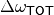 be the total frequency correction (calculation depends on the machine, see below). The RF frequency of a given RF system
 is then shifted by
is then shifted by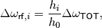
with a corresponding RF phase shift of
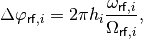
where 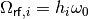 is the design frequency and 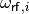 the actual RF frequency applied.
- precalculate_time(GeneralParameters)¶
For PSB, where the PL acts only with a given periodicity, pre-calculate on which turns to act.
Parameters: GeneralParameters – input_parameters.general_parameters.GeneralParameters
- beam_phase()¶
Beam phase measured at the main RF frequency and phase. The beam is convolved with the window function of the band-pass filter of the machine. The coefficients of sine and cosine components determine the beam phase, projected to the range -Pi/2 to 3/2 Pi.
Note
that this beam phase is already determined w.r.t. the instantaneous RF phase.
The band-pass filter modelled assumes a window function of the form
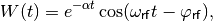
where
 is the window_coefficient that determines how
many bunches are taken into account.
is the window_coefficient that determines how
many bunches are taken into account.The convolution of 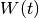 with the bunch profile
 results in two components,
results in two components,![f(t) = \int_{\lambda_{\mathsf{min}}}^{\lambda_{\mathsf{max}}}
{e^{-\alpha (t-\tau)} \cos(\omega_{\mathsf{rf}} (t-\tau) -
\varphi_{\mathsf{rf}}) \lambda(\tau) d\tau}
= e^{-\alpha t} \cos(\omega_{\mathsf{rf}} t)
\int_{\lambda_{\mathsf{min}}}^{\lambda_{\mathsf{max}}}
{e^{\alpha \tau} \cos(\omega_{\mathsf{rf}} \tau +
\varphi_{\mathsf{rf}}) \lambda(\tau) d\tau}
+ e^{-\alpha t} \sin(\omega_{\mathsf{rf}} t)
\int_{\lambda_{\mathsf{min}}}^{\lambda_{\mathsf{max}}}
{e^{\alpha \tau} \sin(\omega_{\mathsf{rf}} \tau +
\varphi_{\mathsf{rf}}) \lambda(\tau) d\tau} .](_images/math/58584bf63c758fecf362782ef22d55666f3de797.png)
The beam phase is determined from the coefficients of the sine and cosine components, i.e.
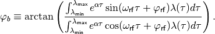
This projects the beam phase to the interval 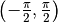, however, the RF phase is defined on the interval 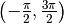. In order to get a correct measurement of the beam phase, we thus add
 if the
cosine coefficient is negative (meaning normally the beam energy is above
transition).
if the
cosine coefficient is negative (meaning normally the beam energy is above
transition).
- phase_difference()¶
Phase difference between beam and RF phase of the main RF system. Optional: add RF phase noise through dphi directly.
As the actual RF phase is taken into account already in the beam phase calculation, only the synchronous phase needs to be substracted and thus the phase difference seen by the PL becomes
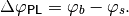
If phase noise is injected through the PL, it is added directly as an offset to this measurement, optionally with the feedback scaling factor
 .
.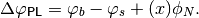
- LHC_F():
Calculates the RF frequency correction 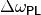 from the phase difference between beam and RF 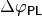 for the LHC. The transfer function is

Using ‘gain2’, the frequency loop can be activated in addition to remove long-term frequency drifts:

- LHC()¶
Calculates the RF frequency correction from the phase difference between beam and RF for the LHC. The transfer function is
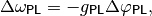
Using ‘gain2’, a synchro loop can be activated in addition to remove long-term frequency and phase drifts:
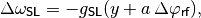
where 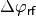 is the accumulated RF phase deviation from the design value and
 is is obtained through the
recursion (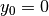)
is is obtained through the
recursion (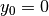)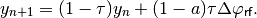
The variables
 and
and  are being defined through the
(single-harmonic, central) synchrotron frequency 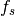 and the
corresponding synchrotron tune 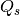 as
are being defined through the
(single-harmonic, central) synchrotron frequency 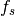 and the
corresponding synchrotron tune 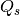 as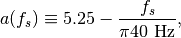

- PSB():
Phase loop:
The transfer function of the system is
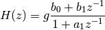
where g is the gain and 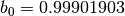, 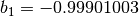, 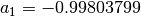.
Let 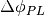 and 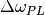 be the phase difference and the phase loop correction on the frequency respectively; since these two quantities are the input and output of our system, then from the transfer function we have in time domain (see https://en.wikipedia.org/wiki/Z-transform):
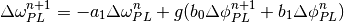
In fact the phase and radial loops act every 10 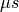 and as a consequence is an average on all the values between two trigger times.
Radial loop:
We estimate the difference of the radii of the actual trajectory and the desired trajectory using one of the four known differential relations with 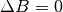:

In reality the error 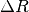 is filtered with a PI (Proportional- Integrator) corrector. This means that

Writing the same equation for 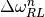 and subtracting side by side we have
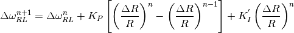
here 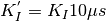 and we approximated the integral with a simple product.
The total correction is then
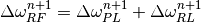